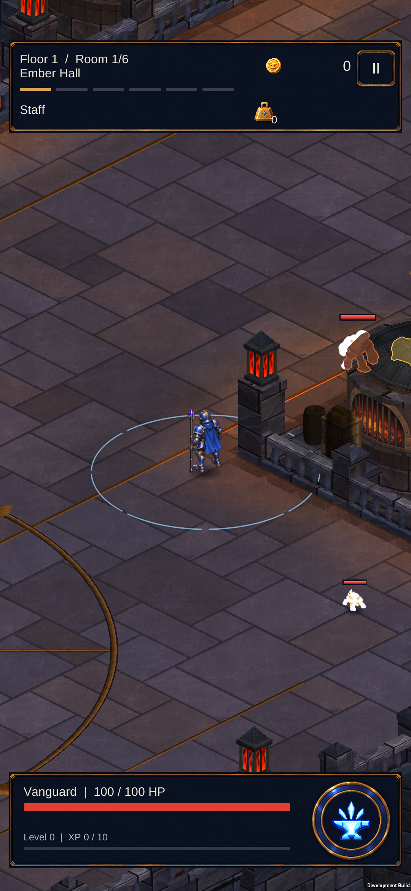

Dökümhane — daha sakin zemin
Koyu derzler ve taş kenarı gölgeleri yumuşatıldı. Zeminin döşeme düzeni korunurken karakterlerin ve pirinç yolların daha rahat okunması hedefleniyor. Solda önce, sağda sonra; gerçek Unity görüntüleri.
Geometri ve malzeme sayısı aynı: 17 statik çizim grubu, 78.232 köşe. Doğrulama kaydı
Atölye çevresi
Haritanın bütünü
Telefonda önce / sonra
545 test geçti; son paket yüklendi. Sabit inceleme: 59,9 FPS, GPU 3,8 ms. Beyaz düşmanlar test sahnesinin anlık vuruş parlamasıdır.
Hareket kontrolü
